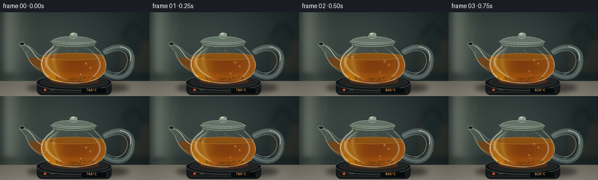
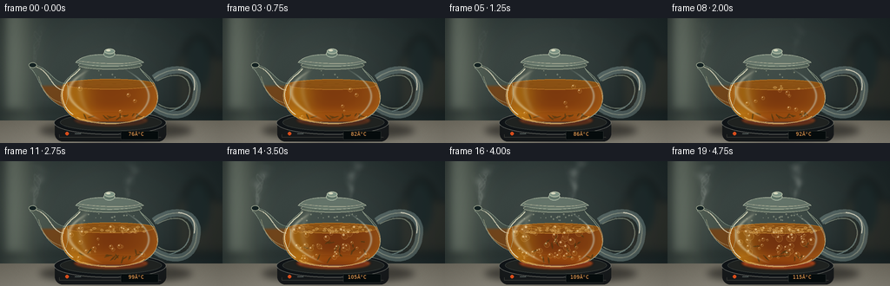
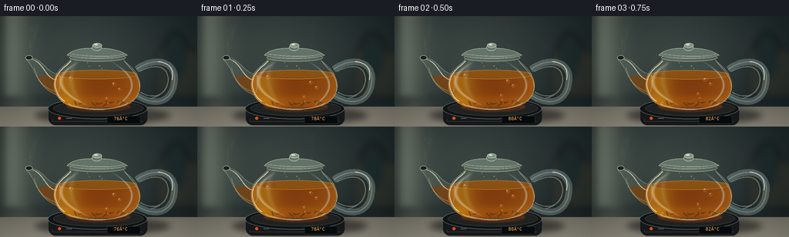
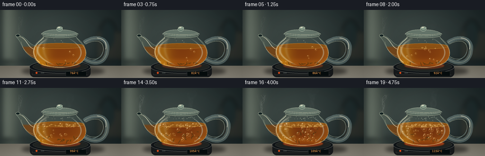

CODING AGENTS AS PIXEL WORLD MODELS
traex/GPT-6.1-Sol · phygen_109
点击播放 · 原生 RGB 像素
逐轮保存的候选
回放视频、检查图与代码变化。
每份候选均可单独播放。实际图片检查记录在下方工具轨迹中。
候选 01播放与检查图
点击播放 · 原生 RGB 像素


展开代码变化
--- 上一保存版本
+++ 本次保存版本
@@ -0,0 +1,234 @@
+from pathlib import Path
+import math
+import numpy as np
+from PIL import Image, ImageDraw, ImageFilter, ImageFont
+from artifact_io import save
+
+ROOT=Path(__file__).resolve().parent
+S=3
+W,H=256*S,144*S
+Y,X=np.mgrid[0:H,0:W].astype(float)/S
+rng=np.random.default_rng(109)
+
+def image(): return Image.new('RGBA',(W,H),(0,0,0,0))
+def box(b): return tuple(int(round(a*S)) for a in b)
+def line(d,pts,fill,width=1): d.line([(round(x*S),round(y*S)) for x,y in pts],fill=fill,width=max(1,round(width*S)),joint='curve')
+def ellipse(d,b,fill,outline=None,width=1): d.ellipse(box(b),fill=fill,outline=outline,width=max(1,round(width*S)))
+def path(segments):
+ out=[]; current=None
+ for seg in segments:
+ if seg[0]=='M': current=np.array(seg[1:]); out.append(tuple(current))
+ elif seg[0]=='L': current=np.array(seg[1:]);out.append(tuple(current))
+ elif seg[0]=='C':
+ a=current; b=np.array(seg[1:3]);c=np.array(seg[3:5]);e=np.array(seg[5:7])
+ for t in np.linspace(0,1,35)[1:]:out.append(tuple((1-t)**3*a+3*(1-t)**2*t*b+3*(1-t)*t*t*c+t**3*e))
+ current=e
+ return out
+
+def maskpoly(points):
+ im=Image.new('L',(W,H));d=ImageDraw.Draw(im);d.polygon([(round(x*S),round(y*S)) for x,y in points],fill=255)
+ return np.array(im)/255.
+def apply(im, color, alpha):
+ a=np.clip(alpha,0,1)
+ if np.ndim(a)==0:a=np.ones((H,W))*a
+ col=np.broadcast_to(color,(H,W,3))
+ overlay=Image.fromarray(np.dstack((np.clip(col,0,255).astype(np.uint8),np.uint8(a*255))),'RGBA')
+ return Image.alpha_composite(im,overlay)
+def over(im,layer):return Image.alpha_composite(im,layer)
+
+body=path([('M',92,55),('C',88,63,76,67,72,78),('C',64,98,79,117,99,119),('C',114,122,143,122,158,117),('C',179,111,186,95,179,79),('C',174,66,161,61,160,55),('C',146,51,107,51,92,55)])
+bodymask=maskpoly(body)
+spout=path([('M',77,75),('C',61,76,59,58,38,53),('L',34,57),('C',46,66,45,91,74,103),('C',78,96,80,85,77,75)])
+spmask=maskpoly(spout)
+# Defocused, warmly lit kitchen. The camera is fixed.
+noise=rng.normal(0,.6,(H,W))
+rad=np.exp(-((X-87)/149)**2-((Y-48)/95)**2)
+bg=np.zeros((H,W,3));bg[:]=[20,30,32]
+bg+=rad[:,:,None]*np.array([38,39,34])
+bg+=np.exp(-((X-23)/24)**2)[:,:,None]*np.array([29,29,23])
+base=Image.fromarray(np.uint8(np.clip(bg+noise[:,:,None],0,255)),'RGB').convert('RGBA')
+blur=image();d=ImageDraw.Draw(blur)
+d.rectangle(box((3,-8,27,106)),fill=(147,158,141,85));d.rectangle(box((30,-8,36,108)),fill=(179,189,165,35))
+d.rectangle(box((203,45,260,104)),fill=(80,63,43,60))
+line(d,[(3,107),(258,107)],(9,19,21,130),3)
+ellipse(d,(210,21,245,86),(26,40,41,150))
+base=over(base,blur.filter(ImageFilter.GaussianBlur(5*S)))
+counter=np.zeros((H,W,3)); counter[:]=[112,108,96]
+counter+=((Y-118)*.85)[:,:,None]
+counter+=8*np.exp(-((X-121)/120)**2)[:,:,None]
+counter+=rng.normal(0,1,(H,W))[:,:,None]
+base=apply(base,counter,(Y>=118).astype(float))
+# Long contact shadows.
+sh=image();ds=ImageDraw.Draw(sh);ellipse(ds,(45,118,221,141),(0,0,0,125));base=over(base,sh.filter(ImageFilter.GaussianBlur(4*S)))
+# Tabletop induction heater with metal rim.
+st=image();d=ImageDraw.Draw(st)
+d.rounded_rectangle(box((63,116,191,142)),radius=9*S,fill=(22,25,27,255))
+ellipse(d,(62,107,191,134),(16,20,23,255),outline=(112,114,108,255),width=.7)
+ellipse(d,(69,110,186,130),(32,35,33,255),outline=(58,64,61,255),width=.5)
+line(d,[(68,134),(68,137),(185,137)],(61,63,58,255),.5)
+base=over(base,st)
+# Glass handle, elliptical hollow and narrow gleaming bevels.
+handle=image();d=ImageDraw.Draw(handle)
+pts=path([('M',177,69),('C',206,49,230,63,226,85),('C',224,110,204,120,177,103)])
+line(d,pts,(145,170,167,100),8.5)
+line(d,pts,(207,217,194,130),1.3)
+pts2=path([('M',181,72),('C',205,59,218,67,218,83),('C',217,100,202,111,182,99)])
+line(d,pts2,(198,208,180,112),1.2)
+line(d,path([('M',205,59),('C',219,60,226,69,223,83)]),(238,234,211,210),1.3)
+line(d,path([('M',195,107),('C',210,104,216,94,217,89)]),(143,170,166,150),1.5)
+base=over(base,handle)
+# Persistent tiny flecks inside the tea.
+seeds=rng.uniform(0,1,(100,5))
+font=ImageFont.truetype('/usr/share/fonts/truetype/dejavu/DejaVuSansMono.ttf',6*S)
+
+frames=[]
+for i in range(20):
+ t=i/4;p=i/19; heat=76+39*p
+ boil=np.clip((p-.35)/.50,0,1)
+ im=base.copy()
+ glow=image();d=ImageDraw.Draw(glow)
+ ellipse(d,(84,110,171,125),(216,62,13,int(50+100*p)))
+ ellipse(d,(88,113,169,125),None,(255,125,36,int(95+110*p)),1.4)
+ im=over(im,glow.filter(ImageFilter.GaussianBlur(1.3*S)))
+ # Steam: turbulent volumetric wisps, extending from the open spout and lid vent.
+ steam=image();ds=ImageDraw.Draw(steam)
+ steam_strength=.08+.82*boil
+ for k in range(11):
+ origin=39 if k<5 else 146
+ oy=54 if k<5 else 46
+ points=[]
+ for v in np.linspace(0,1,80):
+ sy=oy-v*(30+14*boil)
+ sx=origin+math.sin(v*7-t*1.8+k*.95)*(2+7*v)+v*(3+2*math.sin(t+k))+(k%5-2)*1.0
+ points.append((sx,sy))
+ for j in range(len(points)-1):
+ v=j/(len(points)-1)
+ alpha=int(steam_strength*(1-v)**.6*(8 if k%3 else 16))
+ line(ds,points[j:j+2],(229,233,225,alpha),2+3*v)
+ im=over(im,steam.filter(ImageFilter.GaussianBlur(1.3*S)))
+ fine=image();d=ImageDraw.Draw(fine)
+ for k in range(3):
+ pts=[(39+math.sin(v*9-t*1.8+k*1.4)*(1+4*v)+v*5,54-40*v) for v in np.linspace(0,1,80)]
+ line(d,pts,(218,225,216,int(11+24*boil)),1.6)
+ im=over(im,fine.filter(ImageFilter.GaussianBlur(.65*S)))
+ # Empty transparent glass, refracting the background.
+ bgcol=np.zeros((H,W,3));bgcol[:]=[107,123,109]
+ bgcol+=np.exp(-((X-86)/13)**2)[:,:,None]*np.array([47,46,28])
+ im=apply(im,bgcol,bodymask*(.11+.1*np.exp(-((X-126)/54)**4)))
+ im=apply(im,np.array([130,148,122]),spmask*.20)
+ # Amber liquid in the heel of the spout.
+ im=apply(im,np.array([130,66,12]),spmask*np.clip((Y-76)/5,0,.75))
+ # Liquid gradually deepens as leaves circulate; liquid level declines slightly at a boil.
+ level=76+1.4*p
+ dx=(X-126)/51
+ upper=level-5.5*np.sqrt(np.clip(1-dx*dx,0,1))
+ tea_mask=bodymask*(Y>=upper)*(Y<=119)
+ thickness=np.sqrt(np.clip(1-((X-126)/57)**2,0,1))
+ col=np.zeros((H,W,3));
+ col[:,:,0]=134+53*(1-thickness)+24*np.exp(-((X-88)/17)**2)-17*p
+ col[:,:,1]=60+47*(1-thickness)+31*np.exp(-((X-88)/17)**2)-13*p
+ col[:,:,2]=10+13*(1-thickness)
+ col+=np.exp(-((Y-111)/8)**2)[:,:,None]*np.array([24,17,2])
+ col+=((Y-level)/40)[:,:,None]*np.array([8,5,1])
+ im=apply(im,col,tea_mask*.92)
+ # Three-dimensional surface ellipse, shaded back to front.
+ surf=image();d=ImageDraw.Draw(surf)
+ ellipse(d,(75,level-6,178,level+6),(137,80,19,240))
+ im=over(im,Image.fromarray(np.dstack((np.array(surf)[:,:,:3],np.uint8(np.array(surf)[:,:,3]*bodymask))),'RGBA'))
+ surface=image();d=ImageDraw.Draw(surface)
+ for k in range(5):
+ yy=level-4+k*1.6
+ half=49*math.sqrt(max(0,1-((yy-level)/6)**2))
+ line(d,[(126-half,yy),(126+half,yy)],(213-k*9,140-k*9,41,35),.8)
+ # Boiling turbulence ripples at the meniscus.
+ for k in range(13):
+ x=86+(k*13.7)%78
+ wave=math.sin(t*8+k*1.3)
+ yy=level+(k%4-1.5)*1.9
+ rr=1.5+boil*(2.3+wave*.7)
+ ellipse(d,(x-rr*1.6,yy-rr*.35,x+rr*1.6,yy+rr*.35),None,(237,167,68,int(boil*110)),.5)
+ ellipse(d,(75,level-6,178,level+6),None,(245,167,65,125),.65)
+ a=np.array(surface);a[:,:,3]=np.uint8(a[:,:,3]*bodymask);im=over(im,Image.fromarray(a))
+ # Leaf fragments lift off the base in convection currents.
+ leaves=image();d=ImageDraw.Draw(leaves)
+ for k in range(14):
+ s=seeds[k]
+ x=88+s[0]*73+boil*math.sin(t*2+s[1]*8)*9
+ yy=111+s[2]*4-boil*(7+21*s[3])*(.5+.5*math.sin(t*2+s[4]*7))
+ angle=s[4]*6.28+boil*t*2
+ length=2+s[2]*3
+ pts=[]
+ for j in range(18):
+ a=j/18*2*math.pi;u=length*math.cos(a);v=.6*math.sin(a)
+ pts.append((x+u*math.cos(angle)-v*math.sin(angle),yy+u*math.sin(angle)+v*math.cos(angle)))
+ d.polygon([(round(x*S),round(y*S)) for x,y in pts],fill=(49,41,14,190))
+ line(d,[pts[0],pts[9]],(160,113,39,100),.4)
+ im=over(im,leaves)
+ # Coherent bubble trajectories, speeding up as nucleation intensifies.
+ bubbles=image();d=ImageDraw.Draw(bubbles)
+ num=5+int(47*boil)
+ for k in range(num):
+ s=seeds[k+20]
+ phase=(s[1]+t*(.18+.45*boil)*(1+s[4]*.5))%1
+ x=82+s[0]*84+math.sin(t*4+s[2]*7+phase*3)*(.5+1.8*boil)
+ yy=114-phase*(114-level)
+ r=(.6+s[2]*1.65)*(1+.85*boil)*(.7+.45*phase)
+ ellipse(d,(x-r,yy-r,x+r,yy+r),(215,148,49,30),outline=(244,194,110,120),width=.45)
+ ellipse(d,(x-r*.65,yy-r*.74,x-r*.05,yy-r*.18),(255,225,168,165))
+ line(d,[(x+r*.3,yy+r*.6),(x+r*.65,yy+r*.4)],(93,61,17,110),.45)
+ # Foamy clustered bubbles form along the boiling surface, not in the glass headspace.
+ for k in range(int(33*boil)):
+ s=seeds[k+62]
+ x=79+s[0]*94
+ yy=level+s[1]*6-1+math.sin(t*9+k)*.65*boil
+ r=.8+s[2]*1.5
+ ellipse(d,(x-r,yy-r*.55,x+r,yy+r*.55),(215,165,81,95),outline=(255,217,140,180),width=.45)
+ a=np.array(bubbles);a[:,:,3]=np.uint8(a[:,:,3]*tea_mask);im=over(im,Image.fromarray(a))
+ # Glass reflections: soft wide window bands and razor fine edge caustics.
+ highlight=np.exp(-((X-(79+.035*(Y-85)**2))/2.4)**2)*np.clip((Y-59)/10,0,1)*np.clip((118-Y)/8,0,1)
+ highlight2=np.exp(-((X-(171-.028*(Y-90)**2))/1.3)**2)*np.clip((Y-57)/16,0,1)*np.clip((117-Y)/7,0,1)
+ im=apply(im,np.array([248,243,211]),bodymask*highlight*.40)
+ im=apply(im,np.array([212,229,216]),bodymask*highlight2*.45)
+ band=np.exp(-((X-(92+.013*(Y-81)**2))/3.1)**2)*np.exp(-((Y-82)/26)**6)
+ im=apply(im,np.array([241,234,201]),bodymask*band*.12)
+ edges=image();d=ImageDraw.Draw(edges)
+ line(d,body+[body[0]],(179,192,166,150),.8)
+ line(d,path([('M',92,58),('C',87,65,77,69,73,80),('C',68,91,75,106,84,111)]),(239,235,203,220),1.1)
+ line(d,path([('M',161,58),('C',166,66,176,72,180,86),('C',185,104,168,118,152,119)]),(207,221,191,155),.8)
+ line(d,path([('M',88,114),('C',105,123,146,125,166,113)]),(241,199,116,170),1.4)
+ line(d,path([('M',95,116),('C',116,122,140,122,153,118)]),(255,229,159,155),.6)
+ line(d,spout+[spout[0]],(178,196,174,158),.8)
+ line(d,path([('M',39,55),('C',59,61,57,80,73,83)]),(238,232,202,195),1.1)
+ line(d,path([('M',44,67),('C',50,88,59,94,72,98)]),(219,218,175,130),.7)
+ ellipse(d,(33,51,42,57),(18,32,33,240),outline=(199,207,178,220),width=.8)
+ # Glass collar and seated lid, slightly vibrating at the rolling boil.
+ jig=.18*boil*math.sin(t*17)
+ ellipse(d,(90,49+jig,163,59+jig),(119,139,121,100),outline=(205,211,179,190),width=.8)
+ ellipse(d,(95,49+jig,159,55+jig),(24,42,39,120),outline=(188,206,185,145),width=.6)
+ lid=path([('M',87,51+jig),('C',94,42+jig,111,41+jig,125,42+jig),('C',142,41+jig,157,44+jig,165,51+jig),('C',146,57+jig,106,57+jig,87,51+jig)])
+ d.polygon([(int(x*S),int(y*S)) for x,y in lid],fill=(130,149,133,155))
+ line(d,lid+[lid[0]],(207,215,188,210),.7)
+ line(d,path([('M',91,49+jig),('C',109,52+jig,148,54+jig,161,49+jig)]),(238,231,196,180),.8)
+ ellipse(d,(119,37+jig,132,45+jig),(104,125,112,240),outline=(202,214,190,240),width=.65)
+ ellipse(d,(120,35+jig,132,41+jig),(131,153,137,240),outline=(219,224,196,235),width=.7)
+ ellipse(d,(122,36+jig,127,38+jig),(239,238,209,225))
+ # Condensation droplets in the cooler upper portion.
+ for k in range(int(4+20*boil)):
+ s=seeds[k+42];x=91+s[0]*71;yy=60+s[1]*9
+ r=.35+s[2]*.5
+ ellipse(d,(x-r,yy-r,x+r,yy+r*1.3),(194,203,173,85),outline=(237,238,203,110),width=.25)
+ im=over(im,edges)
+ # Temperature is the heater's measured temperature; tea transitions to a rolling boil.
+ ui=image();d=ImageDraw.Draw(ui)
+ d.rounded_rectangle(box((139,130,182,140)),radius=1*S,fill=(6,12,13,255),outline=(58,63,59,255),width=1)
+ d.text((144*S,130*S),f'{round(heat):3d}°C',font=font,fill=(252,167,86,255))
+ ellipse(d,(75,131,79,135),(225,80,29,255))
+ line(d,[(86,133),(93,133)],(124,137,130,255),.6)
+ im=over(im,ui)
+ # Lens vignette and fine photographic grain.
+ arr=np.array(im.convert('RGB')).astype(float)
+ vignette=1-.12*((X-128)/150)**2-.07*((Y-79)/100)**2
+ arr*=np.clip(vignette,.78,1)[:,:,None]
+ out=Image.fromarray(np.uint8(np.clip(arr,0,255))).resize((256,144),Image.Resampling.LANCZOS)
+ frames.append(np.asarray(out))
+save(np.stack(frames),ROOT)
候选 02播放与检查图
点击播放 · 原生 RGB 像素


展开代码变化
--- 上一保存版本
+++ 本次保存版本
@@ -106,6 +106,16 @@
alpha=int(steam_strength*(1-v)**.6*(8 if k%3 else 16))
line(ds,points[j:j+2],(229,233,225,alpha),2+3*v)
im=over(im,steam.filter(ImageFilter.GaussianBlur(1.3*S)))
+ # Broad translucent vapor envelopes break up the thin filament structure.
+ vapor=np.zeros((H,W))
+ for origin,oy in [(39,53),(146,46)]:
+ v=np.clip((oy-Y)/50,0,1)
+ center=origin+v*7+np.sin(v*9-t*1.7)*v*5
+ width=1.4+6.5*v
+ plume=np.exp(-((X-center)/width)**2)*np.sin(np.pi*v)**.7
+ plume*=.72+.28*np.sin(Y*.4-X*.19+t*3)
+ vapor+=plume*(.012+.21*boil)
+ im=apply(im,np.array([223,231,222]),vapor)
fine=image();d=ImageDraw.Draw(fine)
for k in range(3):
pts=[(39+math.sin(v*9-t*1.8+k*1.4)*(1+4*v)+v*5,54-40*v) for v in np.linspace(0,1,80)]
可观测工具轨迹
实际执行的命令与返回图片。
命令 1exit 0
/bin/bash -lc 'ls -la; cat prompt.txt; cat GENERATION_RULES.md; cat task_spec.json'
命令 2exit 0
/bin/bash -lc "cat artifact_io.py; python - <<'PY' import importlib.util for x in ['numpy','PIL','scipy']: print(x, bool(importlib.util.find_spec(x))) PY"
命令 3exit 0
/bin/bash -lc 'fc-list | head -12'
命令 4exit 0
/bin/bash -lc "cat > generate.py <<'PY'
from pathlib import Path
import math
import numpy as np
from PIL import Image, ImageDraw, ImageFilter, ImageFont
from artifact_io import save
ROOT=Path(__file__).resolve().parent
S=3
W,H=256*S,144*S
Y,X=np.mgrid[0:H,0:W].astype(float)/S
rng=np.random.default_rng(109)
def image(): return Image.new('RGBA',(W,H),(0,0,0,0))
def box(b): return tuple(int(round(a*S)) for a in b)
def line(d,pts,fill,width=1): d.line([(round(x*S),round(y*S)) for x,y in pts],fill=fill,width=max(1,round(width*S)),joint='curve')
def ellipse(d,b,fill,outline=None,width=1): d.ellipse(box(b),fill=fill,outline=outline,width=max(1,round(width*S)))
def path(segments):
out=[]; current=None
for seg in segments:
if seg[0]=='M': current=np.array(seg[1:]); out.append(tuple(current))
elif seg[0]=='L': current=np.array(seg[1:]);out.append(tuple(current))
elif seg[0]=='C':
a=current; b=np.array(seg[1:3]);c=np.array(seg[3:5]);e=np.array(seg[5:7])
for t in np.linspace(0,1,35)[1:]:out.append(tuple((1-t)**3*a+3*(1-t)**2*t*b+3*(1-t)*t*t*c+t**3*e))
current=e
return out
def maskpoly(points):
im=Image.new('L',(W,H));d=ImageDraw.Draw(im);d.polygon([(round(x*S),round(y*S)) for x,y in points],fill=255)
return np.array(im)/255.
def apply(im, color, alpha):
a=np.clip(alpha,0,1)
if np.ndim(a)==0:a=np.ones((H,W))*a
col=np.broadcast_to(color,(H,W,3))
overlay=Image.fromarray(np.dstack((np.clip(col,0,255).astype(np.uint8),np.uint8(a*255))),'RGBA')
return Image.alpha_composite(im,overlay)
def over(im,layer):return Image.alpha_composite(im,layer)
body=path([('M',92,55),('C',88,63,76,67,72,78),('C',64,98,79,117,99,119),('C',114,122,143,122,158,117),('C',179,111,186,95,179,79),('C',174,66,161,61,160,55),('C',146,51,107,51,92,55)])
bodymask=maskpoly(body)
spout=path([('M',77,75),('C',61,76,59,58,38,53),('L',34,57),('C',46,66,45,91,74,103),('C',78,96,80,85,77,75)])
spmask=maskpoly(spout)
# Defocused, warmly lit kitchen. The camera is fixed.
noise=rng.normal(0,.6,(H,W))
rad=np.exp(-((X-87)/149)**2-((Y-48)/95)**2)
bg=np.zeros((H,W,3));bg[:]=[20,30,32]
bg+=rad[:,:,None]*np.array([38,39,34])
bg+=np.exp(-((X-23)/24)**2)[:,:,None]*np.array([29,29,23])
base=Image.fromarray(np.uint8(np.clip(bg+noise[:,:,None],0,255)),'RGB').convert('RGBA')
blur=image();d=ImageDraw.Draw(blur)
d.rectangle(box((3,-8,27,106)),fill=(147,158,141,85));d.rectangle(box((30,-8,36,108)),fill=(179,189,165,35))
d.rectangle(box((203,45,260,104)),fill=(80,63,43,60))
line(d,[(3,107),(258,107)],(9,19,21,130),3)
ellipse(d,(210,21,245,86),(26,40,41,150))
base=over(base,blur.filter(ImageFilter.GaussianBlur(5*S)))
counter=np.zeros((H,W,3)); counter[:]=[112,108,96]
counter+=((Y-118)*.85)[:,:,None]
counter+=8*np.exp(-((X-121)/120)**2)[:,:,None]
counter+=rng.normal(0,1,(H,W))[:,:,None]
base=apply(base,counter,(Y>=118).astype(float))
# Long contact shadows.
sh=image();ds=ImageDraw.Draw(sh);ellipse(ds,(45,118,221,141),(0,0,0,125));base=over(base,sh.filter(ImageFilter.GaussianBlur(4*S)))
# Tabletop induction heater with metal rim.
st=image();d=ImageDraw.Draw(st)
d.rounded_rectangle(box((63,116,191,142)),radius=9*S,fill=(22,25,27,255))
ellipse(d,(62,107,191,134),(16,20,23,255),outline=(112,114,108,255),width=.7)
ellipse(d,(69,110,186,130),(32,35,33,255),outline=(58,64,61,255),width=.5)
line(d,[(68,134),(68,137),(185,137)],(61,63,58,255),.5)
base=over(base,st)
# Glass handle, elliptical hollow and narrow gleaming bevels.
handle=image();d=ImageDraw.Draw(handle)
pts=path([('M',177,69),('C',206,49,230,63,226,85),('C',224,110,204,120,177,103)])
line(d,pts,(145,170,167,100),8.5)
line(d,pts,(207,217,194,130),1.3)
pts2=path([('M',181,72),('C',205,59,218,67,218,83),('C',217,100,202,111,182,99)])
line(d,pts2,(198,208,180,112),1.2)
line(d,path([('M',205,59),('C',219,60,226,69,223,83)]),(238,234,211,210),1.3)
line(d,path([('M',195,107),('C',210,104,216,94,217,89)]),(143,170,166,150),1.5)
base=over(base,handle)
# Persistent tiny flecks inside the tea.
seeds=rng.uniform(0,1,(100,5))
font=ImageFont.truetype('/usr/share/fonts/truetype/dejavu/DejaVuSansMono.ttf',6*S)
frames=[]
for i in range(20):
t=i/4;p=i/19; heat=76+39*p
boil=np.clip((p-.35)/.50,0,1)
im=base.copy()
glow=image();d=ImageDraw.Draw(glow)
ellipse(d,(84,110,171,125),(216,62,13,int(50+100*p)))
ellipse(d,(88,113,169,125),None,(255,125,36,int(95+110*p)),1.4)
im=over(im,glow.filter(ImageFilter.GaussianBlur(1.3*S)))
# Steam: turbulent volumetric wisps, extending from the open spout and lid vent.
steam=image();ds=ImageDraw.Draw(steam)
steam_strength=.08+.82*boil
for k in range(11):
origin=39 if k<5 else 146
oy=54 if k<5 else 46
points=[]
for v in np.linspace(0,1,80):
sy=oy-v*(30+14*boil)
sx=origin+math.sin(v*7-t*1.8+k*.95)*(2+7*v)+v*(3+2*math.sin(t+k))+(k%5-2)*1.0
points.append((sx,sy))
for j in range(len(points)-1):
v=j/(len(points)-1)
alpha=int(steam_strength*(1-v)**.6*(8 if k%3 else 16))
line(ds,points[j:j+2],(229,233,225,alpha),2+3*v)
im=over(im,steam.filter(ImageFilter.GaussianBlur(1.3*S)))
fine=image();d=ImageDraw.Draw(fine)
for k in range(3):
pts=[(39+math.sin(v*9-t*1.8+k*1.4)*(1+4*v)+v*5,54-40*v) for v in np.linspace(0,1,80)]
line(d,pts,(218,225,216,int(11+24*boil)),1.6)
im=over(im,fine.filter(ImageFilter.GaussianBlur(.65*S)))
# Empty transparent glass, refracting the background.
bgcol=np.zeros((H,W,3));bgcol[:]=[107,123,109]
bgcol+=np.exp(-((X-86)/13)**2)[:,:,None]*np.array([47,46,28])
im=apply(im,bgcol,bodymask*(.11+.1*np.exp(-((X-126)/54)**4)))
im=apply(im,np.array([130,148,122]),spmask*.20)
# Amber liquid in the heel of the spout.
im=apply(im,np.array([130,66,12]),spmask*np.clip((Y-76)/5,0,.75))
# Liquid gradually deepens as leaves circulate; liquid level declines slightly at a boil.
level=76+1.4*p
dx=(X-126)/51
upper=level-5.5*np.sqrt(np.clip(1-dx*dx,0,1))
tea_mask=bodymask*(Y>=upper)*(Y<=119)
thickness=np.sqrt(np.clip(1-((X-126)/57)**2,0,1))
col=np.zeros((H,W,3));
col[:,:,0]=134+53*(1-thickness)+24*np.exp(-((X-88)/17)**2)-17*p
col[:,:,1]=60+47*(1-thickness)+31*np.exp(-((X-88)/17)**2)-13*p
col[:,:,2]=10+13*(1-thickness)
col+=np.exp(-((Y-111)/8)**2)[:,:,None]*np.array([24,17,2])
col+=((Y-level)/40)[:,:,None]*np.array([8,5,1])
im=apply(im,col,tea_mask*.92)
# Three-dimensional surface ellipse, shaded back to front.
surf=image();d=ImageDraw.Draw(surf)
ellipse(d,(75,level-6,178,level+6),(137,80,19,240))
im=over(im,Image.fromarray(np.dstack((np.array(surf)[:,:,:3],np.uint8(np.array(surf)[:,:,3]*bodymask))),'RGBA'))
surface=image();d=ImageDraw.Draw(surface)
for k in range(5):
yy=level-4+k*1.6
half=49*math.sqrt(max(0,1-((yy-level)/6)**2))
line(d,[(126-half,yy),(126+half,yy)],(213-k*9,140-k*9,41,35),.8)
# Boiling turbulence ripples at the meniscus.
for k in range(13):
x=86+(k*13.7)%78
wave=math.sin(t*8+k*1.3)
yy=level+(k%4-1.5)*1.9
rr=1.5+boil*(2.3+wave*.7)
ellipse(d,(x-rr*1.6,yy-rr*.35,x+rr*1.6,yy+rr*.35),None,(237,167,68,int(boil*110)),.5)
ellipse(d,(75,level-6,178,level+6),None,(245,167,65,125),.65)
a=np.array(surface);a[:,:,3]=np.uint8(a[:,:,3]*bodymask);im=over(im,Image.fromarray(a))
# Leaf fragments lift off the base in convection currents.
leaves=image();d=ImageDraw.Draw(leaves)
for k in range(14):
s=seeds[k]
x=88+s[0]*73+boil*math.sin(t*2+s[1]*8)*9
yy=111+s[2]*4-boil*(7+21*s[3])*(.5+.5*math.sin(t*2+s[4]*7))
angle=s[4]*6.28+boil*t*2
length=2+s[2]*3
pts=[]
for j in range(18):
a=j/18*2*math.pi;u=length*math.cos(a);v=.6*math.sin(a)
pts.append((x+u*math.cos(angle)-v*math.sin(angle),yy+u*math.sin(angle)+v*math.cos(angle)))
d.polygon([(round(x*S),round(y*S)) for x,y in pts],fill=(49,41,14,190))
line(d,[pts[0],pts[9]],(160,113,39,100),.4)
im=over(im,leaves)
# Coherent bubble trajectories, speeding up as nucleation intensifies.
bubbles=image();d=ImageDraw.Draw(bubbles)
num=5+int(47*boil)
for k in range(num):
s=seeds[k+20]
phase=(s[1]+t*(.18+.45*boil)*(1+s[4]*.5))%1
x=82+s[0]*84+math.sin(t*4+s[2]*7+phase*3)*(.5+1.8*boil)
yy=114-phase*(114-level)
r=(.6+s[2]*1.65)*(1+.85*boil)*(.7+.45*phase)
ellipse(d,(x-r,yy-r,x+r,yy+r),(215,148,49,30),outline=(244,194,110,120),width=.45)
ellipse(d,(x-r*.65,yy-r*.74,x-r*.05,yy-r*.18),(255,225,168,165))
line(d,[(x+r*.3,yy+r*.6),(x+r*.65,yy+r*.4)],(93,61,17,110),.45)
# Foamy clustered bubbles form along the boiling surface, not in the glass headspace.
for k in range(int(33*boil)):
s=seeds[k+62]
x=79+s[0]*94
yy=level+s[1]*6-1+math.sin(t*9+k)*.65*boil
r=.8+s[2]*1.5
ellipse(d,(x-r,yy-r*.55,x+r,yy+r*.55),(215,165,81,95),outline=(255,217,140,180),width=.45)
a=np.array(bubbles);a[:,:,3]=np.uint8(a[:,:,3]*tea_mask);im=over(im,Image.fromarray(a))
# Glass reflections: soft wide window bands and razor fine edge caustics.
highlight=np.exp(-((X-(79+.035*(Y-85)**2))/2.4)**2)*np.clip((Y-59)/10,0,1)*np.clip((118-Y)/8,0,1)
highlight2=np.exp(-((X-(171-.028*(Y-90)**2))/1.3)**2)*np.clip((Y-57)/16,0,1)*np.clip((117-Y)/7,0,1)
im=apply(im,np.array([248,243,211]),bodymask*highlight*.40)
im=apply(im,np.array([212,229,216]),bodymask*highlight2*.45)
band=np.exp(-((X-(92+.013*(Y-81)**2))/3.1)**2)*np.exp(-((Y-82)/26)**6)
im=apply(im,np.array([241,234,201]),bodymask*band*.12)
edges=image();d=ImageDraw.Draw(edges)
line(d,body+[body[0]],(179,192,166,150),.8)
line(d,path([('M',92,58),('C',87,65,77,69,73,80),('C',68,91,75,106,84,111)]),(239,235,203,220),1.1)
line(d,path([('M',161,58),('C',166,66,176,72,180,86),('C',185,104,168,118,152,119)]),(207,221,191,155),.8)
line(d,path([('M',88,114),('C',105,123,146,125,166,113)]),(241,199,116,170),1.4)
line(d,path([('M',95,116),('C',116,122,140,122,153,118)]),(255,229,159,155),.6)
line(d,spout+[spout[0]],(178,196,174,158),.8)
line(d,path([('M',39,55),('C',59,61,57,80,73,83)]),(238,232,202,195),1.1)
line(d,path([('M',44,67),('C',50,88,59,94,72,98)]),(219,218,175,130),.7)
ellipse(d,(33,51,42,57),(18,32,33,240),outline=(199,207,178,220),width=.8)
# Glass collar and seated lid, slightly vibrating at the rolling boil.
jig=.18*boil*math.sin(t*17)
ellipse(d,(90,49+jig,163,59+jig),(119,139,121,100),outline=(205,211,179,190),width=.8)
ellipse(d,(95,49+jig,159,55+jig),(24,42,39,120),outline=(188,206,185,145),width=.6)
lid=path([('M',87,51+jig),('C',94,42+jig,111,41+jig,125,42+jig),('C',142,41+jig,157,44+jig,165,51+jig),('C',146,57+jig,106,57+jig,87,51+jig)])
d.polygon([(int(x*S),int(y*S)) for x,y in lid],fill=(130,149,133,155))
line(d,lid+[lid[0]],(207,215,188,210),.7)
line(d,path([('M',91,49+jig),('C',109,52+jig,148,54+jig,161,49+jig)]),(238,231,196,180),.8)
ellipse(d,(119,37+jig,132,45+jig),(104,125,112,240),outline=(202,214,190,240),width=.65)
ellipse(d,(120,35+jig,132,41+jig),(131,153,137,240),outline=(219,224,196,235),width=.7)
ellipse(d,(122,36+jig,127,38+jig),(239,238,209,225))
# Condensation droplets in the cooler upper portion.
for k in range(int(4+20*boil)):
s=seeds[k+42];x=91+s[0]*71;yy=60+s[1]*9
r=.35+s[2]*.5
ellipse(d,(x-r,yy-r,x+r,yy+r*1.3),(194,203,173,85),outline=(237,238,203,110),width=.25)
im=over(im,edges)
# Temperature is the heater's measured temperature; tea transitions to a rolling boil.
ui=image();d=ImageDraw.Draw(ui)
d.rounded_rectangle(box((139,130,182,140)),radius=1*S,fill=(6,12,13,255),outline=(58,63,59,255),width=1)
d.text((144*S,130*S),f'{round(heat):3d}°C',font=font,fill=(252,167,86,255))
ellipse(d,(75,131,79,135),(225,80,29,255))
line(d,[(86,133),(93,133)],(124,137,130,255),.6)
im=over(im,ui)
# Lens vignette and fine photographic grain.
arr=np.array(im.convert('RGB')).astype(float)
vignette=1-.12*((X-128)/150)**2-.07*((Y-79)/100)**2
arr*=np.clip(vignette,.78,1)[:,:,None]
out=Image.fromarray(np.uint8(np.clip(arr,0,255))).resize((256,144),Image.Resampling.LANCZOS)
frames.append(np.asarray(out))
save(np.stack(frames),ROOT)
PY
python generate.py"命令 5exit 0
/bin/bash -lc "python - <<'PY'
p='generate.py'
s=open(p).read()
s=s.replace(\"im=over(im,steam.filter(ImageFilter.GaussianBlur(1.3*S)))\", \"\"\"im=over(im,steam.filter(ImageFilter.GaussianBlur(1.3*S)))
# Broad translucent vapor envelopes break up the thin filament structure.
vapor=np.zeros((H,W))
for origin,oy in [(39,53),(146,46)]:
v=np.clip((oy-Y)/50,0,1)
center=origin+v*7+np.sin(v*9-t*1.7)*v*5
width=1.4+6.5*v
plume=np.exp(-((X-center)/width)**2)*np.sin(np.pi*v)**.7
plume*=.72+.28*np.sin(Y*.4-X*.19+t*3)
vapor+=plume*(.012+.21*boil)
im=apply(im,np.array([223,231,222]),vapor)\"\"\")
s=s.replace(\"ðC\", \"\\\\u00b0C\")
open(p,'w').write(s)
PY
python generate.py
ls -lh pixels.npz index.html inspection.png"视觉工具实际返回图片 1

保存候选 2 份；完成命令 5 次；可验证图片返回 1 张。原始 API 响应与完整日志保留在本地。